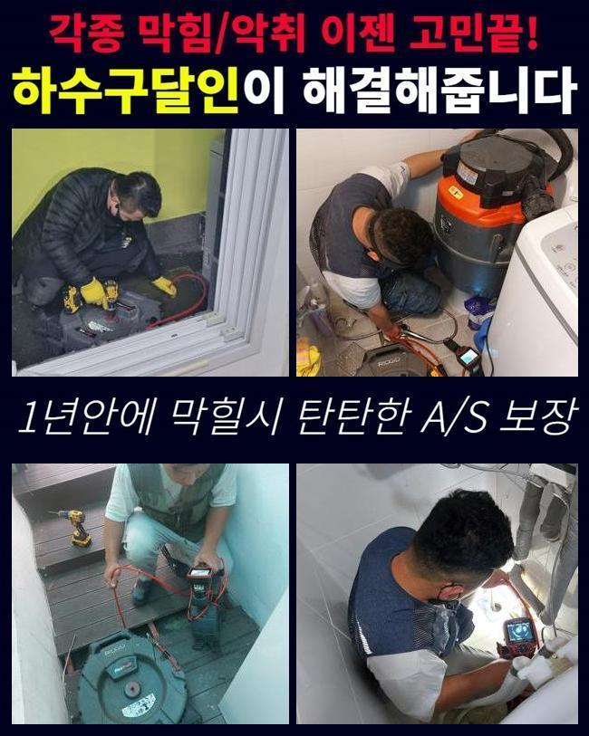
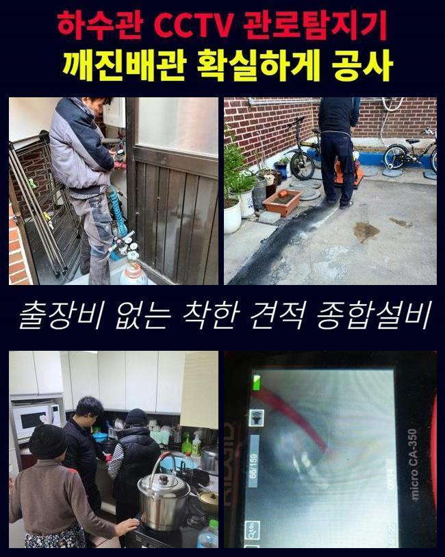
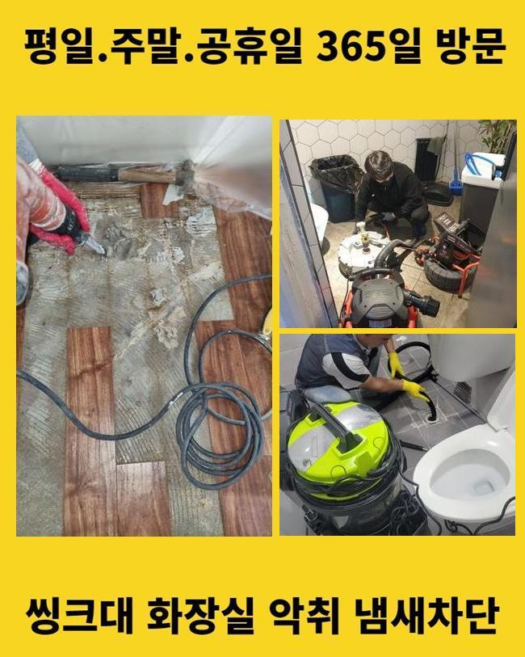
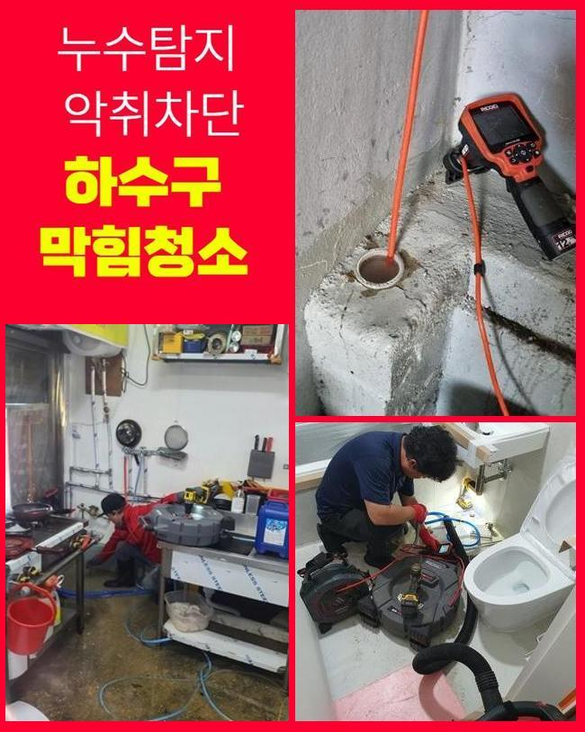
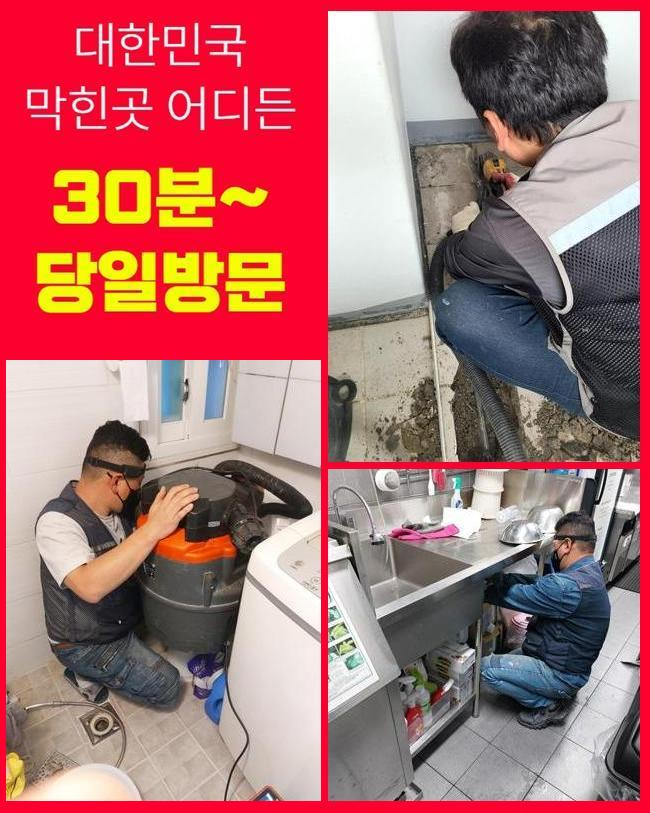
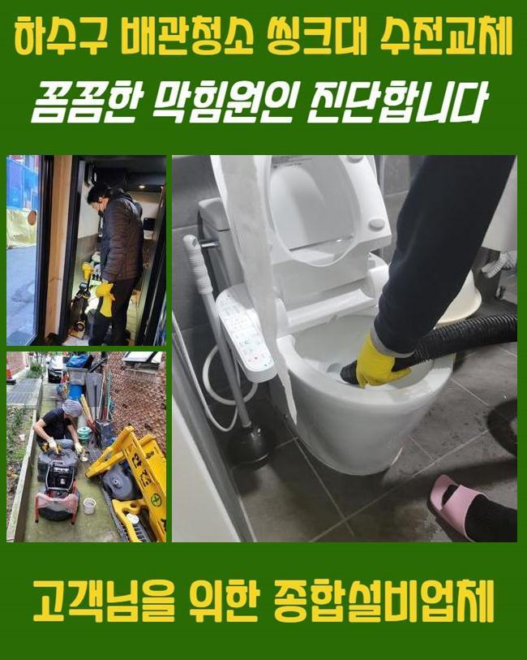
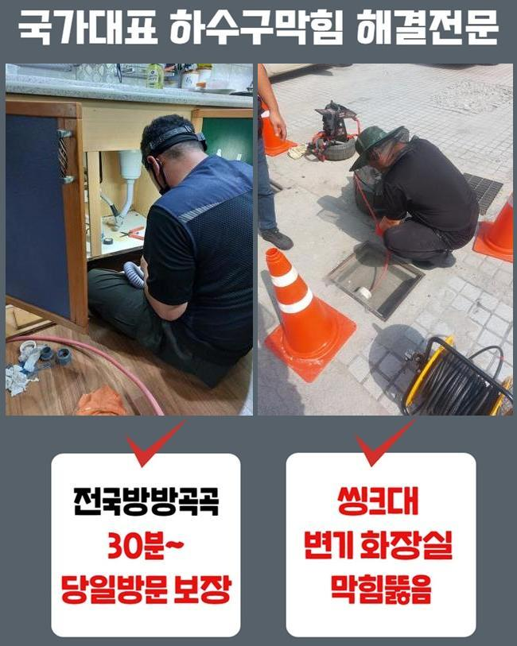

🏠 강동구 고덕동씽크대막힘 천호동 횡주관청소 물샘전문업체
용인 싱크대막힘 전문 시공 후기

📋 작업 개요
- 위치: 용인
- 서비스 유형: 싱크대막힘, 배관막힘, 맨홀막힘, 누수수리, 역류해결, 배관청소, 고압세척
- 작업 일시: 2024. 11. 15. 19:53
- 업체명: 하수구수사대 (010-5615-2118)
🔍 문제 상황
강동구 고덕동씽크대막힘 천호동 횡주관청소 물샘전문업체
가정과 일반음식점과 같이 업장들에서 배수구가 막혀 불편을 감당하시는 장소가 자주 발발하는데요
해당 장소에서의 양상과 관련하여 운영의 불편 뿐만 아니라 심각한 손실을 입으셨다면 서두른 조치가 실시되는 것이 좋겠습니다
일단은 만성적으로 재발하는 문제가 안나타나게끔 명확한 작업이 이뤄지는 고객님의 선정과정은 중요하죠
문제의 현장은 산업시설에 자리한 식제품 공장이였죠
현장 주위의 관로들이 솟구치며 밖에서 보더라도 중대 사안이라고 판단해 점검이 요구됐죠
깨끗한 위생요소가 필요한 식자재 작업장인 만큼 위생상 문제로 중단으로 인해 여러 불편이 불가피했어요
작업들을 신속히 진행하기 위하여 거시적으로 증상들을 유심히 살폈습니다
앞서서 다른 업체들이 방문하였지만 메인관을 못 찾아서 문제를 풀어감에 닿지 못했다 전해주셨어요

🔎 원인 분석
💡 전문가 진단: 정밀 진단 장비를 사용하여 슬러지의 고착 여부를 판명하고 타격/세척 작업을 실시했습니다.
설계도도 맞지 않았지만 첫번째로 메인배관의 부위를 특정하고자 해결을 속행했죠
탐지기기로 통해서 해당 스팟을 정확하게 특정시켜보았어요
내시경기기를 꺼내어 안쪽을 긴히 파악해 까닭들을 확인해주었습니다
평상 시 물빠짐 장애들이 발생될 때 음식찌꺼기들이나 기름성분을 포함해 수많은 잔재들이 침전되는 사례가 보여지죠
이곳에서도 생각한 것처럼 단단히 쌓여버린 이물이 확인됐죠
평상시에 전문진은 스프링을 이용하거나 석션장치로 불리고 있는 장비를 운용해요
입구라인에 통수만 확보하는것이 이뤄지므로 딱딱한 이물은 제거될 수 없어요
따라서 고착물과 단단한 잔재들을 안전하게 청소하는 강력한 수압을 자랑하고 있는 고압세척장비의 활용을 통해 작업해줍니다
금일의 현장처럼 스케일이 상당한 사업장에서는 피해수준도 대체적으로 큽니다 이럴때 석션으로 문제를 잠재우는게 힘들기에 고압의 세척 과정을 이행시키는 경우들이 존재합니다
금일에는 차량으로부터 고압 세척기를 꺼내서 관로에 단단해진 기름성분들을 분쇄하여 구석까지 제거했는데요

🔧 작업 과정
고압을 통한 방법으로 이물을 제거시키고 구간마다의 시공했는데요
수리 뒤에는 세척된 자리를 내시경 촬영을 꺼내서 진단했습니다
고객분께도 청소된 상황을 가감없이 보이기 위하여 검수절차는 동반하여 진행하는걸 기본으로 합니다
이후의 내방한 곳은 학교 맨홀라인으로부터 역류하는 현상들이 보여졌죠
맨홀시설은 비중자체가 크므로 안정적인 처리가 필요했는데요
해당 라인부터 길가의 하수관까지 거시적으로 내시경카메라로 검수를 이행했어요
관찰해보니 단시간이라기 보다 과거에서부터 퇴적된 고착물이 많았던 해당 지점의 심각성을 인지했습니다
검수과정이 끝나곤 적절한 장비로 청소를 시작하였습니다
고압노즐로 내부에 누적된 상당량의 슬러지들을 없애주었습니다
수습을 하고서는 내시경카메라를 이용해서 타겟으로 한 세척된 모습들을 체크했습니다
갑작스럽게 생겨날지 모르는 문제들로 곤란하셨을 의뢰자도 많기에 늦게라도 방문 및 작업들을 속행해 드리죠
상가처럼 사용이 많아 배수장애가 발생될 때, 불편이 한두가지가 아닙니다
해당 곳들에서도 내시경카메라로 진단을 거치고 흡착물 청소를 위하여 샤프트장치를 이용했어요
그 다음 장소에서도 최종적으로 타겟 부분을 향한 고압 세척을 진행시켰는데요
작업 시 먼저 핵심은 내시경 카메라를 꺼내어 증세의 기조가되는 구간들을 서둘러 찾는것입니다
내시경카메라를 배제시킨다면 원인인점이 어떤라인에 존재하는지 인지할 수 없어서 전문가들을 부르고자 할 때는 내시경기기의 구비를 필수적으로 문의해보세요


✅ 작업 완료
하수시스템 오류가 발견되었다면 고착물과 오염원을 배출시키는건 배수관 전문업체의 대응이 필요하고 민간적인 방식도 좋겠으나 잘못하면 상황들이 악화되기에 꼭 전문업체를 찾아보시는게 비용으로도 합리적일 수 있어요
장소를 가리지않고 요청하시는 장소서 작업한 다음 a/s에 따라 1년동안에 책임지고 있어서 큰 걱정은 없으십니다
청소가 잘되었는지 내시경장치를 공개하여 깨끗한 단계들을 실시함을 보장합니다
의문이 있으실 경우 편하실때 문의하신다면 가려운 부분에 있어서 안내드릴게요




⚠️ 베란다 누수 및 방수 관리 방법
- ✅ 비가 많이 올 때 창틀 주변이나 아래층 천장에 얼룩이 생기는지 정기적으로 확인해 보세요.
- ✅ 우수관 주변 실리콘 마감이 들뜨거나 깨진 틈새가 있는지 손상 여부를 수시로 체크하세요.
- ✅ 베란다 바닥 타일의 줄눈(메지)이 소실되면 그 틈으로 물이 침투하여 누수가 유발됩니다.
- ✅ 누수 의심 증상 발견 시 방치하면 아래층 손실이 커지므로 즉시 전문가의 진단을 받으십시오.
💡 핵심 정리
- 확실한 장비 작업(내시경 점검 및 샤프트 스케일링)으로 원인을 뿌리 뽑습니다.
- 작업 후 1년 이내에 동일한 부위 재발 시 100% 무상 A/S 서비스를 보장합니다.
- 서울 · 경기 · 인천 전 지역에 24시간 언제든 긴급 출동할 수 있도록 항시 대기 중입니다.
❓ 자주 묻는 질문 (FAQ)
🚨 용인 싱크대막힘 문제로 고민이신가요?
정확한 원인 진단과 확실한 시공으로 재발 없는 해결을 약속드립니다.
24시간 긴급 출동 | 서울 · 경기 · 인천 전지역 | 1년 내 재발 시 무상 A/S